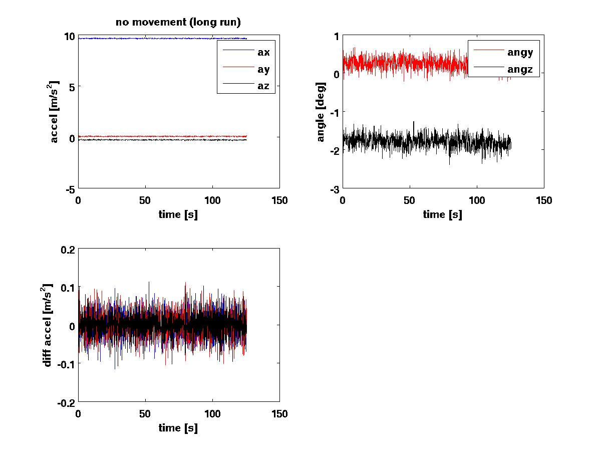
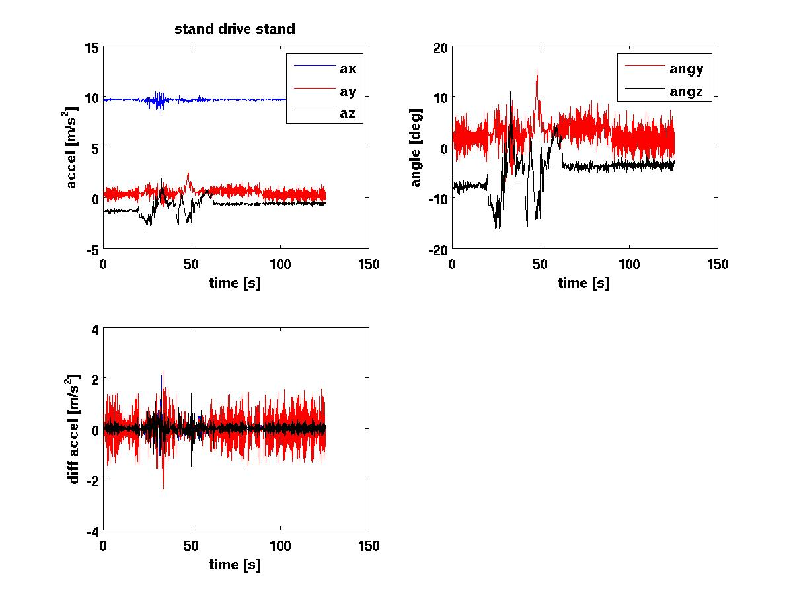

Testing acceleration
We recorded the x/y/z acceleration of the smartphone in order to see
how noisy the sensors are and how much acceleration we see in a normal
drive.
The script that produced these plots is christoph/accel/ana_accel.m.
The raw data are in the sub-directory data.
The following image shows data when the car was standing and the engine
was switched off. This gives the base noise of the sensors.

The figure shows the raw data, the two orientation angles of the
smartphone (angles with respect to gravity), and the acceleration
differenc from one reading to the next. The statistics on the data are:
data/20121018_071633_860-accel.txt, no movement (long run):
ax: mean 9.62 std 0.024 ay: mean 0.04 std 0.025 az: mean
-0.30 std 0.027 [m/s^2]
angy: mean 0.25 std 0.152 amgz: mean -1.79 std 0.160
[deg]
max diff a(i)-a(i-1): 0.12 [m/s^2]
The next data set shows the acceleration when the car was standing with
the motor on, then driving, then standing again. This gives the
distribution of accelerations from normal driving (no hills, no sharp
acceleration or braking).

The statistics fo the data are:
data/20121015_161439_043-accel.txt, stand drive stand:
ax: mean 9.63 std 0.141 ay: mean 0.45 std 0.451 az: mean
-0.81 std 0.629 [m/s^2]
angy: mean 2.66 std 2.674 amgz: mean -4.81 std 3.699
[deg]
max diff a(i)-a(i-1): 2.39 [m/s^2]
The angle std of 2.7 deg and 3.7 deg have multiple contributions: The
base noise (small), the vibration from the engine, acceleration from
speeding up and braking, and actual change in orientation of the
camera.
Conclusions:
- There is significant difference of the noise when the motor is
off (e.g. max diff a(i)-a(i-1): 0.12 m/s^2) compared to when the car is
driving (max diff a(i)-a(i-1): 2.39 m/s^2). It is therefore feasable to
use a(i)-a(i-1) as an indication that the motor is switched on.
- When using angles calculated from the accelerometer as an initial
estimate for the orientation of the camera one should use 0.16 deg
(std) as the base noise and 3.5 deg (std) as an upper limit on the
uncertainty from driving.